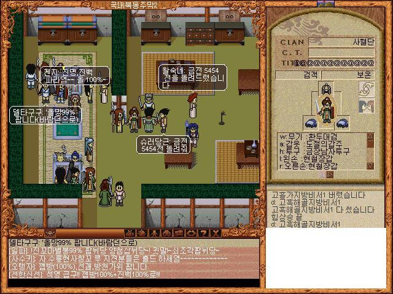
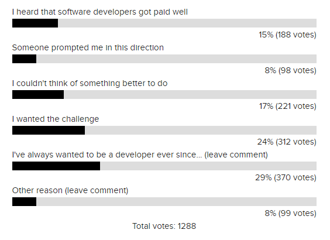
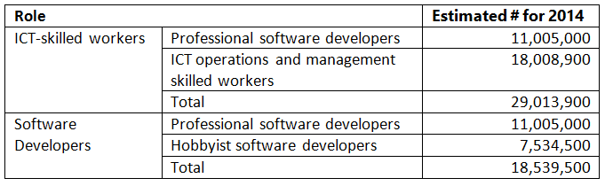
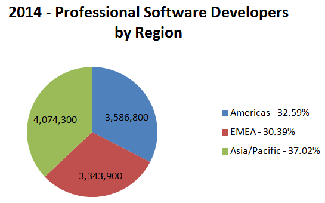
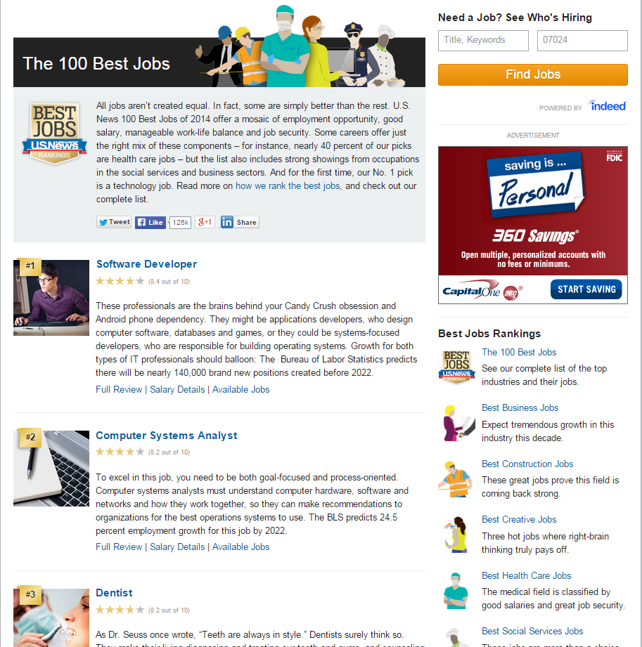
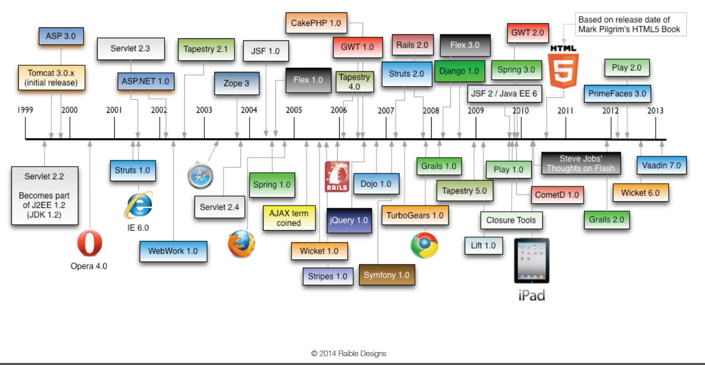

나의 개발 원정기
Created by Jiyun Kang / @an5asis
Warning!
지극히 보편적이면서 누구나 의견 나눌수 있는 흥미위주의 오픈 발표를 지향합니다.
본인 소개
중학교내 인터넷 동아리로 개발입문
16비트 감성의 현업 7년차 개발자
주로 J2EE 기업용 시스템 개발
안정된 기술과 새로운 경험 추구
Web & 오픈소스에 환장..
바람의 나라
인생개조!!!
가상세계로 올인
우여곡절 끝에 웹/자바개발자로 정착
설문조사
당신은 왜 개발자가 되었나요?
별이유없다..걍 조아서~
누구나 개발할수 있다!
초딩도 코딩하는 시대~
이따가 눈으로 확인하세요...
현재 상황
 짱짱한 미래?
물론! 제대로 하려면 어렵다..
개발이란 아이를 키우는것
"하드웨어 설계가 공장 짓기라면
소프트웨어 설계는 아이 키우기 ^^"
-이희승
HTML + JavaScript

본 자료는 Reveal.js를 이용하여 만들어졌습니다.